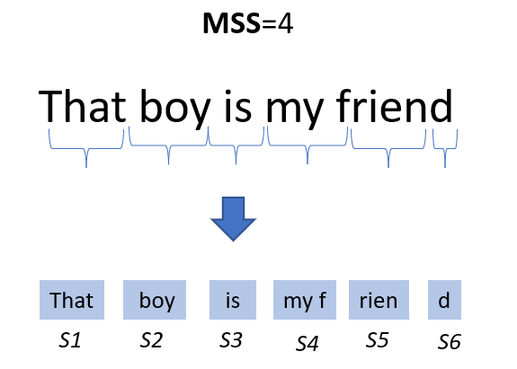
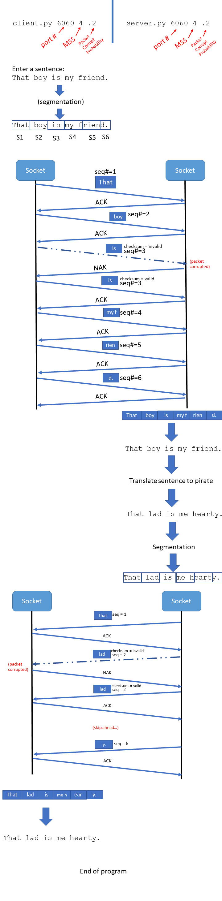

Programming Assignment 2: Reliable Data Transfer Pirate Translation
Assigned Monday October 2nd
Due Friday October 20th @11:59 PM
GitHub Repo
You will use the same GitHub repo from PA1. All of your files for this assignment should go inside a /PA2 folder
Overview
In this assignment, you will develop a reliable data transfer protocol between a client a server that communicate with sockets. The client program will ask for a sentence/phrase to be translated into pirate. Your program will divide up the original message into segments to send to the server.
The server will receive these segments, reassemble them into the correct message, and translate them into pirate. The server segments this message and send them back to the original client where it will be reassembled into their translated sentence.
For example, "That boy is my friend" will be translated to "That lad is me hearty".
RDT Protocol
You will implement the Reliable Data Transfer 2.1 protocol. In this protocol, it is possible for messages and
acknowledgements (ACKs) to arrive corrupted. If either one of those are corrupted, the sender or receiver needs to ask for a retransmission. This is a
stop-and-wait protocol,
so the sender must wait to send the next message until it has received an ACK for the previous message. RDT 2.1 also uses
checksums to detect bit errors or corrupted packets, and uses
sequence numbers to identify different segments. NAKs will never be corrupted.
Segmentation
One important responsibility of the transport layer is
segmentation . When sending a message from point A to point B, the transport layer will divide up the application layer message into small segments, which will each receive a header before being sent into the network layer.
The size of these segments are based on the Maximum Segment Size (MSS). This value will be an input parameter to your program.

Instructions
For this assignment, you will develop two programs:
client.py and
server.py .
client.py
The "client" will send a sentence that they would like to be translated to the server. This program is run via the command line and takes 3 command line parameters:
python client.py [PORT_NUMBER] [MAXIMUM_SEGMENT_SIZE] [PACKET_CORRUPT_PROBABILITY]
example: python client.py 5001 4 .2 //port 5001, segments will be length of 4, 20% corruption probability
The
PORT_NUMBER argument is the port that the socket will bind to. Remember that you should only use ports greater than 1024.
The [MAXIMUM_SEGMENT_SIZE] will represent how big the segments will be. For example, if MTT=4, each segment will have 4 characters as its data. [PACKET_CORRUPT_PROBABILITY] is the probability that a packet will be corrupted upon its arrival. This can be expressed as a percent (20), or a decimal (.2). For example, if this value is .2, then the client will send a corrupted packet to the server ~20% of the time.
The client will segment the original sentence and send the segments one by one, but the client must wait for an ACK from the server before it can send the next segment. It is possible that the ACK could be corrupted, so when ACKs/message arrive, the client will need to check the checksum and ask for a retransmission from the server if needed.
The final ACK in a transmission cannot be corrupted. NAKs CAN NOT be corrupted, which will make things easier.
Important: After you send a message to a socket with
send() , the client should
time.sleep(1) to ensure the server has enough time to recieve the message.
server.py
This file will be your server. The server is run from the command line with the same three inputs
python server.py [PORT_NUMBER] [MAXIMUM_SEGMENT_SIZE] [PACKET_CORRUPT_PROBABILITY]
example: python server.py 5001 8 .1 //port 5001, segments will be length of 8, 10% corruption probability
When the translates the message, it will segment the pirate message based on its MSS value and send the segments back to the client.[PACKET_CORRUPT_PROBABILITY] is the probability that a packet will be corrupted upon its arrival. This can be expressed as a percent (10), or a decimal (.1). For example, if this value is .1, then the server will send a corrupted packet to the client ~10% of the time.

Packet Class
You must define a packet class / struct in your program. You must be sending these objects through your socket between client and server. You can create a separate class for an ACK/NAK packet if you would like. Your class must have at least
Class Packet {}
- int sequence_number
- int checksum // can also be a string or boolean ("valid" or "invalid")
- int ack_or_nak //ack = 1, nak=0, neither = 2
- int length
- string message
}
- The sequence number is a counter to keep track of every packet sent by a host. In TCP, the sequence number is based on the amount of bytes sent, but for this assignment the sequence number should happen by packet number. So that means the first packet sent gets a sequence number of 1, the second packet gets a sequence number of 2, and so on. When a host sends back a NAK, you will need to determine which packet to resend. The sequence number can also help you reassemble the message when all packets arrive to the other host.
- The checksum is a flag (either true or false, or valid or invalid) that indicates whether a packet is corrupted. Upon packet arrival, if the checksum field is "invalid"/0/False, then the host must throw out that packet and ask for a retransmission
- The ack_or_nak field indicates if a packet is an ack, a nak, or neither. How you implement this is up to you, but you could have 0 represent a nak, 1 represent an ACK, and 2 represent a normal message
- The length field tells the host how long the message will be (# of characters in the string), this value should never exceed the MSS.
- The message field is the segment of the sentence that needs to get sent to host for translation
Example packet
Packet(4,"valid",2,4,"my f") would be an uncorrupted packet with the message "my f" and has a sequence number 4.
Packet(0,"valid",1,0,"") would be an uncorrupted acknowledgement (ACK) message
Pirate Language Translation file
I will provide you a basic csv file that includes some translations from english words to pirate words. Your server will need to read this file in order to translate the client's message.
Pirate CSV file:
https://www.cs.montana.edu/pearsall/classes/fall2023/466/programs/pirate.csv
Sample output
Please refer to
Wednesday October 4th's lecture at the 8:00 minute mark for a demo of how the output for PA2 might look.
Programming Language
You are allowed to use a programming language of your choice. Although, you must use a language that supports:
- Socket communication
- OOP or Structs
- Invocation from the command line/terminal
Python is the support language for this class, so Reese will not be able to help with technical issues or syntax issues if you select a language other than Python. Java, Rust, Go, C/C++ are all valid languages to use.
Hints
- Do not tackle the whole problem in one go. Take it one step at a time. First just get two sockets to send/receive objects, then get message segmenting working, then sequence numbers, then acks, etc.
- When a NAK is received, you will need to retransmit the last message sent, so you might need a data structure to store the previous message sent.
- The server will not know how many packets to wait for. I recommend having your server/client accept packets until a message with a punctuation mark (. , ?, !) is received. When the host sees a message with a punctuation mark, stop the loop and begin assembling and translating
- Translating to pirate should be basic file reading. You can use the comma as a delimiter, and then split the sentence into individual words and translate the words that have a match in the csv file
- Dont submit code that doesnt work. If you can't get packet retransmission working properly, try to get everything else working.
Video Demo
You will record a video demo that highlights the functionality of your program. You can do this with Panopto, or you can record with another recording software (such as OBS) and post it to youtube as private or unlisted.
Partners
You are allowed to work with up to 2 partners. Each group member needs to have their own private github repository (even though the code will be the same)
Submission Info
Every member MUST SUBMIT A REPO LINK TO D2L. All files should be pushed to your repository inside of a PA2 folder. You will need a README inside of your PA2 folder that contains the video link and information about your program.
Grading Rubric (100 Points)
| Requirement |
Points |
| Your program has a server and client program that are ran from the command line with correct parameters (port, MSS, corrupt %) |
5 |
| Your program segments messages based on the MSS |
10 |
| Segments are sent one-by-one, and do not send until an ACK from the previous message has been receieved |
15 |
| Segments are properly retransmitted when packet corruption occurs |
15 |
| All packets include AT LEAST (1) sequence number (2) checksum, (3) ack_or_nak_filed, (4) length, and (5) message |
5 |
| Packets arrive in same order as they were sent |
5 |
| The original message is reassembled and translated into pirate |
15 |
| The pirate sentence is segmented and sent back to client properly |
15 |
| Packets are sent through sockets |
5 |
| Your code is submitted to a private Github repo that has a README desribed how to run your program(s) and contains a link to your video demo |
10 |
Penalties
- Running code results in errors before runtime: -30 points
- Running code results in errors during runtime: -15 points
- No video demo: -50 points
- Your repository is public: -100 points
Helpful Examples
Solution